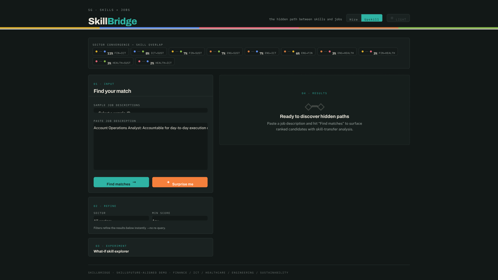
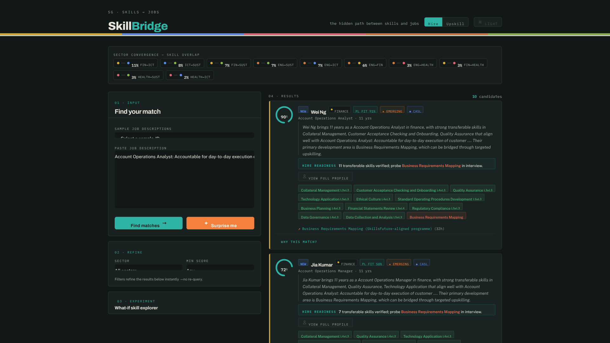
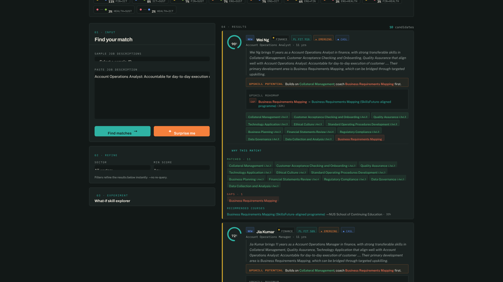
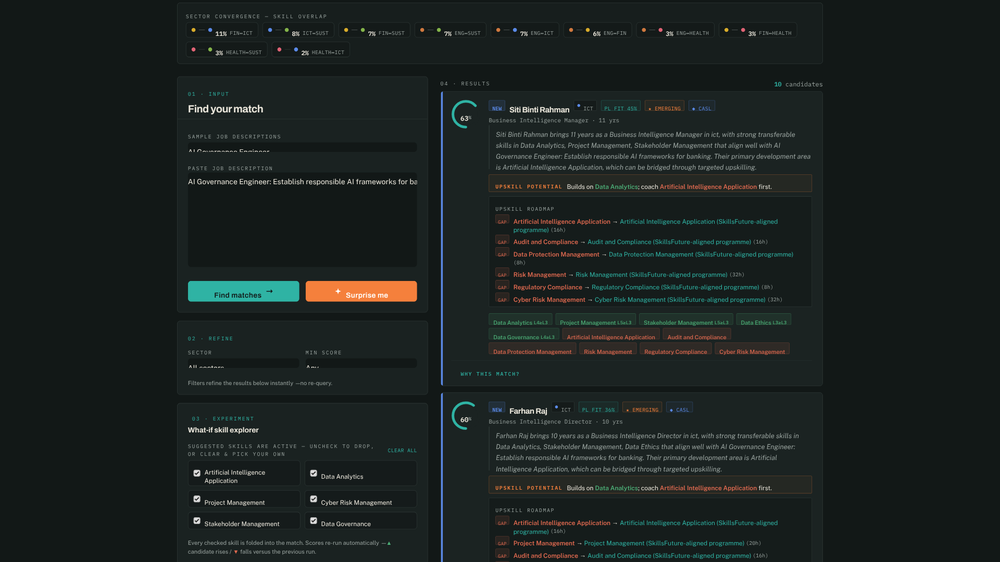
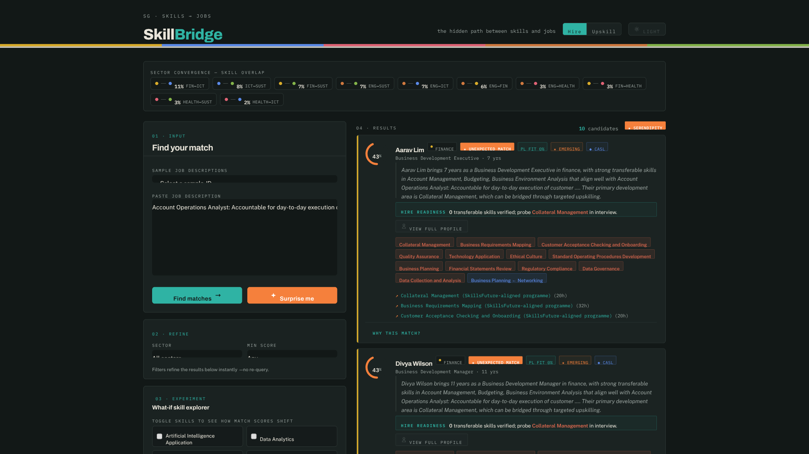

SkillBridge SG
Cross-Sector Skills Matching for Singapore's Workforce
Our mission: make every transferable skill count — so no worker is invisible to the jobs they can already do.
The Problem
An accountant with "Data Analytics + Python" is invisible to AI Governance roles in the ICT sector.
Existing platforms match by single-sector keywords only — no transferable skills, no proficiency awareness, no explanation.
The Solution
An 8-stage hybrid matching pipeline grounded in the official SWDA Skills Framework — 2,030 roles · 12,007 skills · proficiency levels 1–6.
- Dual-path retrieval → fusion → cross-encoder re-ranking
- Proficiency-aware scoring + full explainability
- Bridge skills + real course recommendations
The Matching Engine — how a score is really computed
Two independent retrieval paths, fused and re-ranked. Every number is traceable to a model and a dataset.
Funnel: 150 candidates → 50+50 recalled → 30 fused → 10 re-ranked → scored & explained in under a second.

Paste a real Job Description — Account Operations Analyst (Finance)

Ranked results with hybrid scores (40–98) across 5 sectors — returned in < 1 s

"Why this match?" — matched skills with PL annotations · gaps · bridge skills · courses

Hire ↔ Upskill toggle — reframes every result as growth potential, instantly, no re-query

What-if skill explorer — suggested skills start active; uncheck or Clear all, then pick your own. Scores re-run live (▲ rises / ▼ falls)

"Surprise me" — a serendipity filter surfaces unexpected cross-sector matches
The Full Toolkit
- What-if skill explorer — prioritise or drop skills, watch scores shift
- Instant filters — sector, minimum score, clickable convergence pairs
- "Why this match?" — matched · gaps · bridges · recommended courses
- Light / dark theme · Hire ↔ Upskill framing · sub-second results
Not a black box — where the data comes from
Every match traces back to official government data — deterministic · reproducible · auditable.
Grounded in Real Data
Official SWDA Skills Framework dataset
Built with Qoder
Quest Mode + Expert Mode + CLI automation — 2 weeks, 97 tests, real government data.
SkillBridge SG
Skills don't retire at sector boundaries. Neither should people.
Alibaba Cloud × Qoder Hackathon Singapore 2026